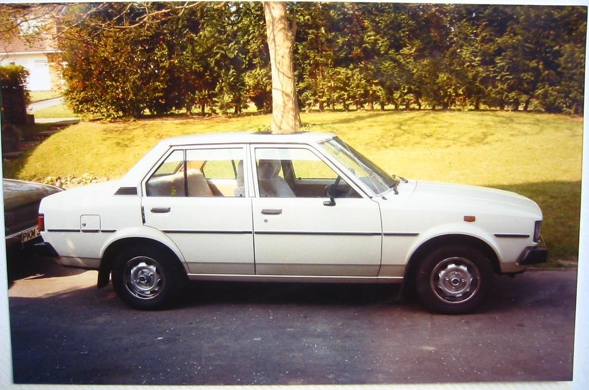

Whether you’re into the roar of a powerful engine, the elegance of a well-crafted classic, or the cutting-edge technology shaping the future of cars, you’ll find something to ignite your passion here. Through detailed reviews, feature articles, and stunning visuals, I aim to bring the thrill of the open road to every visitor. Wheels on Fire isn’t just a website—it’s a celebration of all things automotive, and I’m excited to share this journey with you.
My First Car

The 1980 Toyota Corolla 1.3 DX was more than just a car to me—it was my first car, the one that sparked my lifelong love for automobiles. I still remember the day I got the keys; it wasn’t flashy or brand-new, but it was mine, and that made all the difference. This Corolla became a symbol of freedom, a ticket to exploration, and the foundation of my deep passion for cars. Learning to drive in this car was an experience in itself, as its manual transmission taught me the importance of feeling connected to the road, the hum of the 1.3-liter engine becoming a sound I associated with possibility and adventure. Every drive was a lesson in patience and precision, and every mile added a new layer to my appreciation for the craftsmanship that went into making this modest yet reliable vehicle. The simplicity of the Corolla’s design and mechanics allowed me to get hands-on with its maintenance, giving me my first taste of working on cars, which eventually evolved into a full-fledged hobby.
Owning the 1980 Corolla 1.3 DX was special not only because it was my first car, but because it marked the beginning of my relationship with cars as more than just machines. It was where I learned to appreciate the character that each vehicle holds—its quirks, its strengths, and even its flaws. The memories I made in that car, from late-night drives to long weekend trips, are still vivid in my mind. It became a companion through my early years of independence and a reminder of simpler times. The car’s durability, withstanding years of wear and tear, mirrored the steadfast role it played in my life. Every time I see a photo of the Corolla on sites like Flickr, or even when I catch a glimpse of one on the road, it brings back a flood of nostalgia. To me, it wasn’t just a mode of transportation—it was the car that ignited my love for the automotive world, and no other car, no matter how modern or powerful, will ever hold the same special place in my heart.